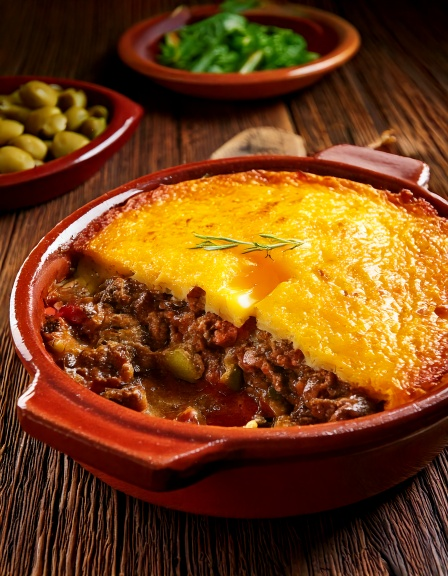

Ang iconic na layered corn and beef casserole ng Chile, na may fresh corn crust sa ibabaw -- real na pastel de choclo comfort, gawa sa lean beef at walang added sugar sa topping.
Nutrition (bawat serving)
380
Calories
34g
Carbs
26g
Protina
16g
Fat
5g
Fiber
~50
Est. GI
Bakit bagay ito sa diabetes-friendly na diyeta
Ang traditional na corn topping ay kadalasang pinapatamis ng sugar, na nagtataas pa sa isang dish na already corn-heavy sa glycemic load. Ang version na ito ay tinatanggal nang buo ang added sugar at gumagamit ng lean ground beef sa filling, para lumabas ang real na pastel de choclo flavor na walang extra sugar spike.
Mga Sangkap
- 1 lb450 g lean ground beef
- 11 sibuyas, hiniwa
- 1 tsp1 tsp ground cumin
- 22 hard-boiled na itlog, hiniwa
- 88 black olives
- 4 cups600 g fresh o frozen na corn kernels
- 1/2 cup120 ml low-fat na gatas
- 1 tbsp15 ml olive oil
Paraan ng Paggawa
- I-preheat ang oven sa 190°C. I-brown ang beef kasama ang sibuyas at cumin sa kawali, tapos ilagay sa oven-safe na dish.
- I-layer ang hiniwang hard-boiled eggs at olives sa ibabaw ng meat.
- I-blend ang corn kernels kasama ang gatas at olive oil hanggang magkaroon ng coarse, makapal na puree.
- Ikalat ang corn puree nang pantay sa ibabaw ng meat layer.
- I-bake ng 30-35 minuto hanggang matigas ang ibabaw at bahagyang golden, tapos i-serve na mainit.
Sa GlucoBeacon
Isa ito sa mga real na Chilean recipe ng GlucoBeacon, bahagi ng lumalaking regional recipe collection na ginawa para sa real diabetes-friendly na meal planning. I-download ang GlucoBeacon sa Google Play →